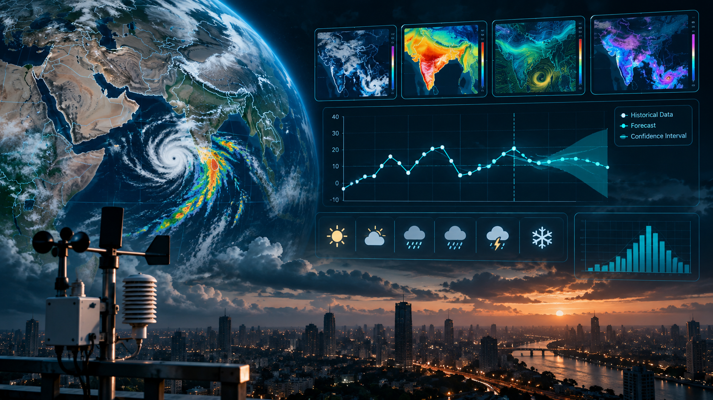
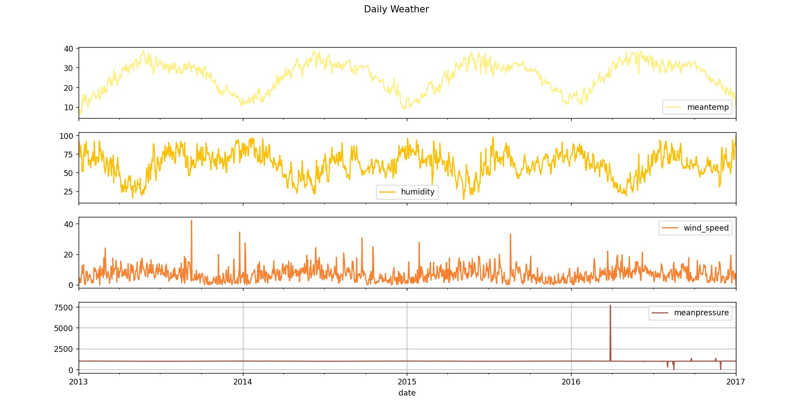
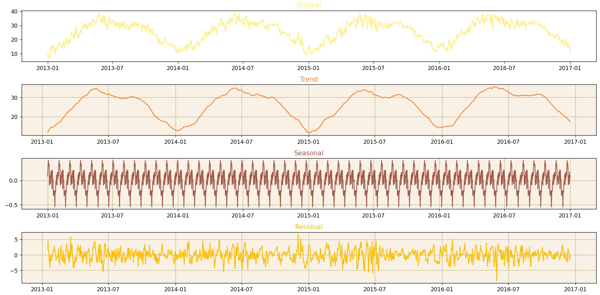
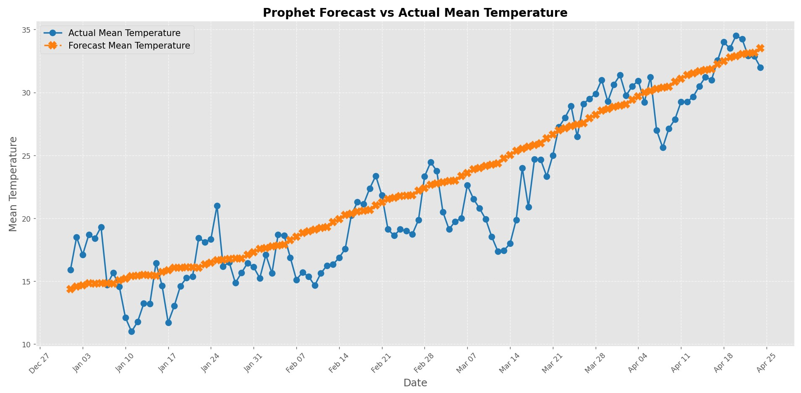

Weather Forecasting
An end-to-end time-series forecasting project exploring historical weather patterns, seasonality, temporal structure, and Prophet-based forecasting through an interactive Streamlit application.

The Problem
Weather observations evolve through multiple temporal patterns rather than following a simple linear trend. Temperature, humidity, wind speed, and atmospheric pressure exhibit different levels of seasonality, variability, noise, and outlier behavior. The challenge was therefore to build a forecasting workflow that first understands the temporal structure of the data before generating future predictions.
The Approach
- Historical Delhi weather data containing temperature, humidity, wind speed, and atmospheric pressure observations.
- Exploratory time-series analysis to inspect temporal patterns and relationships between weather variables.
- Stationarity analysis, moving averages, seasonal decomposition, and ACF/PACF exploration.
- Outlier investigation and IQR-based preprocessing where appropriate.
- Independent Prophet forecasting models for weather variables with different temporal behavior.
- Comparison of forecast trajectories against historical observations.
- Development of an interactive Streamlit interface for selecting forecast dates and forecast horizons.
Technical Decisions
- Exploratory analysis was performed before modeling so forecasting decisions were based on the actual temporal structure of the dataset.
- Seasonal decomposition was used to separate long-term trend, recurring patterns, and residual variation.
- Weather variables were modeled separately because each variable exhibits different dynamics and levels of variability.
- Prophet was used to model trend and recurring temporal patterns while keeping the forecasting workflow interpretable.
- The Streamlit layer was designed to expose forecast parameters and results interactively rather than presenting only static model output.
Results
The project produced an end-to-end forecasting workflow spanning historical data exploration, temporal decomposition, preprocessing, Prophet-based forecasting, forecast comparison, and interactive application delivery.
Why It Matters
This project demonstrates that practical time-series forecasting extends beyond model training. Understanding seasonality, trends, anomalies, and variable-specific behavior is essential before forecasts can be interpreted meaningfully. The Streamlit application also demonstrates how analytical models can be converted into an accessible interface for exploring future predictions.
Experimental Evidence
Historical exploration, temporal decomposition, forecast comparison, and application-level visualization illustrate the complete workflow from understanding the weather data to presenting future forecasts.

Historical Weather Behavior
Historical observations of temperature, humidity, wind speed, and atmospheric pressure were explored to identify temporal patterns, variability, and potential anomalies before forecasting.

Seasonal Decomposition
Decomposition of the temperature series into the observed signal, long-term trend, seasonal behavior, and residual component helps reveal the structure underlying the raw time series.

Prophet Forecast vs Actual Temperature
Forecasted mean-temperature values are compared with observed values to visually inspect how the Prophet model follows the broader temperature trend while smoothing short-term fluctuations.
Streamlit Forecasting Interface
Interactive forecasting workflow demonstrating date selection, forecast-horizon control, and visualization of generated weather predictions.
Need a Similar Solution?
If your project involves time-series analysis, forecasting, data exploration, predictive modeling, or interactive analytics, let’s discuss the problem and the right technical approach.